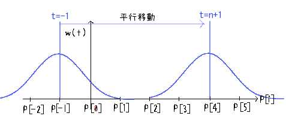
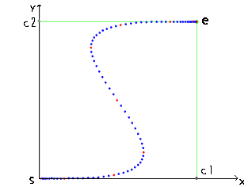
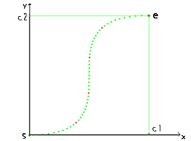

補間（曲線）
・ベジェ曲線
前の節ではあくまで一次元的な値の推移についての補間でした。
この節では二次元的な座標平面上に存在する2点間を補間することを目的とします。
（やってることはあまり変わりません）
まず始点sから終点eまでを滑らかな曲線でつなぐ補間法にベジェ曲線があります。
ベジェ曲線補間を適用するためには始点と終点の他にいくつかの制御点が必要となります。
ここでは制御点を２つ渡す3次ベジェ曲線について考えます。
内分点を求める操作を繰り返して現在のt(0≤t≤1)に対する現在点を求めるのですが詳しい実装は前に解説しましたのでそちらを参照してください。
->2.ベジェ曲線軌道（サイト内リンク）
始点s(0,0),終点e(1,1),制御点として矩形の端点c1(1,0),c2(0,1)を与えたときのベジェ曲線補間は以下のようになります。

今度はxy平面なことに気をつけてください。
ベジェ曲線は制御点の位置により回り込むようなダイナミックな曲線も描けることが特徴です。
求め方も内分点だけですので座標クラスを引数とする内分点を求める関数を予め作っておけば問題ありません。
・Bスプライン曲線
ベジェ曲線で任意の曲線が描けることは分かりました。
しかし上の図を見て、もうすこし制御点の方へ寄って行って欲しいようには思えませんか？
ベジェ曲線だけで変形させるためには制御点をかなり遠くの方まで持ってかなければその寄与があまり現れません。
それはそれで特徴なので利用すればいいのですが適切な制御点というのはなかなか定めにくい。
シミュレータを作って実測してみるのもいいですが、もうすこし直感的に各点の寄与が分かりやすいような補間があればいいですね。
Bスプライン曲線補間を用いれば各点の寄与に着目して現在点を決めることができます。
補間の一般的な考え方として各点の寄与を考えるとその重み分だけ適当なウェイトをかけて足し合わせれば中間的な点が手に入ります。

m(t)が求めたい現在点です。
Σの範囲が見慣れませんがこれは始点をP0,終点をPnにするためです（後述）
同様にtの範囲も異なります上式においてtの範囲は-1≤t≤n+1です。
Piは始点と終点を含んだ全制御点の配列で、nは始点と終点を含んだ全制御点の個数です（今回はn=4）
P[i]={s,c1,c2,e}ですがΣの範囲に合わせてP[i+2]={s,s,s,c1,c2,e,e,e}としておきます。
tの時点での重みw(t)を各点にかけることによりその寄与を得ます。
重みw(t)は3次Bスプライン曲線として定義されていて、

で表されます。
tの定義域は今までのものと異なり-2≤t≤2まで（-∞≤t≤∞だけど0なので）となります。
w(t)は以下のような形をしています。
縦軸w(t),横軸tとします。

t=1では重みw(t)のどちらの場合分けでも同じ値(1/6)をとり、かつ、傾きも等しいので滑らかに繋がります(微分してみてください)
最大値をとるのはt=0で、その値は2/3です。
実はこの重み、t全域で積分すると１になるようにできています。（実際にやってみてください）
確率分布的な性質と同じ、と考えれば分かりやすいでしょうか。
さて、このw(t)をPiにかけて行くのですがm(t)の式を見るとwの引数はt-iです。
これは平行移動を表し、徐々にどのPiの寄与を強めていくか（あるいは弱めていくか）を表します。
w(0)のときのiに対応するPiの寄与が一番強くなることはmax{w(t)}=w(0)なことからも明らかです。
補間の始まり、つまりt=-1の時を考えます（m(t)におけるtの定義域参照）
この時w(t)はw(-1-i)です。iは-2からn+2まで動くので、
重みはw(1),w(0),w(-1),w(-2) ... w(-n-3)です。
w(t)の式よりtの絶対値が2以上の時、寄与が0なので全て消えて、残るのは始めの3項だけです。
始めの3項は全てs（P[-2]=P[-1]=P[0]=s）なのでm(t=-1)はsとなります。
補間の終わり、t=n+1の時も同様で、
この時w(t)はw(n+1-i)です。iは-2からn+2まで動くので、
重みはw(n+3) ... w(2),w(1),w(0),w(-1)です。
w(t)の式よりtの絶対値が2以上の時、寄与が0なので全て消えて、残るのは最後の3項だけです。
最後の3項は全てeなのでm(t=n+1)はeとなります。
中間地点では、t-i=0に最も近いi番目の制御点の寄与が一番強くなり、その制御点の方へ寄っていきます。
tは連続数（小数）ですのでなめらかに各点の寄与が強くなっていきます。
以上のw(t)の様子を図に示します。

あと、実装上の注意としてはベジェ曲線の引数のフォーマットと揃えたいので始点startP,終点endP,制御点c1,c2,現在カウントnowCnt,補間完了までの時間tsを引数として取ります。
時間について、前回の補間ではt=nowCnt/tsとして0〜1のtで補間していましたが今回はtは-1〜n+1です。
めんどくさいと思うかもしれませんが前回の線形補間テンプレートを使えば簡単です。
nowCntとtsを引数に-1〜n+1まで線形補間で連続なtを得ます。こういったパラメータの設定に線形補間はぴったりです。
それでは以下に3次Bスプライン曲線補間の実装コードを載せます。
//3次Bスプライン
template<class T>
T BSplineInterpolate(const T& startP,const T& c1,const T& c2,const T& endP,int nowCnt,int ts){
//始点と終点を含めた制御点の総数
const int N=4;
//制御点の配列
T p[N]={startP,c1,c2,endP};
//現在時刻t（-1≤t≤N）
float t=LinearInterpolate(-1.0f,(float)N,nowCnt,ts);
//重みr,ti=t-i
float r,ti;
//現在どの点の寄与か表すインデックス
int k;
//現在点
T m=T();
//Σi=-2〜N+2
for(int i=-2;i<N+2;i++){
//インデックス設定
k=i;
if(i<0)k=0; //i=-2,-1ならばi=0番目の点の寄与
if(i>N-1)k=N-1; //i=N,N+1ならばi=N番目の点の寄与
//重みを求める
ti=t-i;
r=0;
if(-2<=ti && ti<=2){
float d=abs(ti)-2;
r=-d*d*d/6;
}
if(-1<=ti && ti<=1){
float d=abs(ti);
r=(3*d*d*d-6*d*d+4)/6;
}
//重みをかけて各点の寄与を足し込む
m+=(p[k]*r);
}
return m;
}
C++の配列は0ベースなのでインデックス関係で少々±1してます。
今までの説明と食い違っているところもあるかと思いますが大丈夫です。
重みを求める関数は分離してもいいですがこのくらいなら組み込みでもいいかと。
テンプレートのTは四則演算が定義された座標クラスを想定しています。
四角形の4点をそれぞれ引数に与えてBスプライン補間は以下のようになります。

同じパラメータのベジェ曲線と比べても、制御点の寄与が大きいことが分かります。

ぐいっと
Bスプライン曲線もよく使われる補間です。
普通Bスプラインと言うと始点と終点を通らないものなんですが前後に仮の制御点として連続させると通るようになります。
原理が分からなくても実装さえできればこちらのものです（←
・速度一定なベジェ曲線
普通のベジェ曲線はこうでした。（ts=50）

ちょっと分かりにくいですが始点と終点付近の点は離れていて、中間付近の点より移動量が大きいことが分かります。
一般にベジェ曲線の点の間隔、すなわち速度は一定ではありません。
これもベジェ曲線の特徴として利用できますが速度一定で遷移して欲しい場合があります。
この「速度一定」という要件を満たすことは意外に難しく、補間の進行度を示す時間tをいじる必要があります。
今までtは毎フレーム増えるカウンタcntを想定して、線形に増加していました。
このtのいじり方ですがある関数x(t)として表せる補間に対して、その関数の逆関数t(x)が分かるならばそれに従います。
しかし一般に逆関数を求めるプロセスは複雑で、さらにベジェ曲線は簡単な関数x(t)の形すらしていません。
そこで本来そのパラメータで描けるベジェ曲線をいったん全て網羅し、そのおのおのの点間の距離を保持します。
その距離を正規化することで0〜1の区間とし、tがどの区間に属するかを求めます。
さらにtがその区間内のどの位置（割合）にいるかをパラメータとして線形補間でtを決めます。
文字ばっかりで申し訳ないですがこのままコードも載せます。
//速度一定ベジェ
template<class T>
T LinearBezierInterpolate(const T& startP,const T& c1,const T& c2,const T& endP,int nowCnt,int ts){
int N=ts; //全分割数
float ni=1/(float)N; //逆数
T p(startP),q; //始点と通常のベジェ曲線を描く点
float tt=0; //区間ごとのt
float x,t=nowCnt/(float)ts; //汎用変数と通常のt
float *dd=new float[N+1]; //距離を保持する配列
//ttは小数なのでintで桁落ちしないためのゲタ
const int G=1000000;
//始めの長さは0
dd[0]=0;
//パラメータに対するベジェ曲線の距離を合算していく
for(int i=1;i<N+1;i++){
//時間での区間を進める
tt+=ni;
//ttでの通常のベジェ曲線上の点を得る
q=BezierCurveInterpolate(startP,c1,c2,endP,tt*ts*G,ts*G);
//距離を足し込んで保持
dd[i]=dd[i-1]+Distance(p,q);
//次の点へ
p=q;
}
//距離の合計(=dd[N])で正規化
//これでddはdd[0]=0<dd[1]<dd[2]<...<dd[N-1]<dd[N]=1となる
for(int i=1;i<N+1;i++){
dd[i]/=dd[N];
}
//指定されたtが距離でいうと何番目の区間kにあるかを求める
int k=0;
for(int i=0;i<N;i++,k++){
if(dd[i]<=t && t<=dd[i+1])break;
}
//tが区間内のどのあたりにあるかを調べる
//t=dd[k]ならx=0,t=dd[k+1]ならx=1,0<=x<=1
x=(t-dd[k])/(dd[k+1]-dd[k]);
//その割合で線形補間し、区間長をかける
x=(k*(1-x)+(1+k)*x)*ni;
delete[] dd;
//求めたxに基づいてベジェ曲線上の点を返す
return BezierCurveInterpolate(startP,c1,c2,endP,x*ts*G,ts*G);
}
詳しくはコメントに書きました。
Distanceは２点間の距離を求める関数です。この関数は平方根を含むため、遅いです。
さらにこの速度一定ベジェ関数が呼び出される度にいちいち全ベジェ曲線を描くのでさらに遅いです。
結果としてこの補間はかなり遅いです。処理速度が欲しい場合は使い物にならないでしょう。
ともかくこれで速度一定、等間隔なベジェ曲線が描けます。以下をごらんください。
左が速度一定ベジェ、右が通常のベジェです。
点の数はどちらもts=50個です。左は等間隔になっていることが分かりますね。
・まとめ
曲線系の補間について主にベジェ曲線とBスプライン曲線についてまとめてみました。
速度一定の手法はベジェ曲線だけでなく他の補間にも有効です。遅いですが。
このような与えられた点Pの配列に対してそれらを無理なく通る近似曲線を得る手法としては他にも
ラグランジュ補間や台形補間、シンプソンの公式等でググれば出てくるかと思います。
正確性と処理時間とはトレードオフです。
よって目的に合った補間法を選ぶ必要があるでしょう。
今回載せたコードはテンプレートですが、お使いの座標クラスに合わせて適応してください。
おそらくそれほど異質なことはしていないので基本的な実装でコンパイルは通ると思います。
・参考サイト様
Future B-Spline Page
Bスプライン曲線について。補間と重み関数。
移動速度が変わらないベジエ曲線
速度一定ベジェの参考に。少々コード自体は改変していますがほぼそのままです。
あとでベジェ曲線のシミュレータを作っておこう・・・